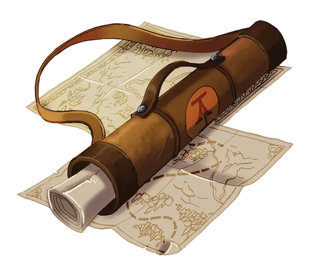

Футляр картографа
Cartographer's Map Case
Чудесный предмет, обычный

Рекомендованная стоимость 50-100 зм
При получении 3-го ранга ваша карта становится обычным магическим предметом.
Карта кратчайшего пути. В дополнение к хранению обычных карт, ваш футляр картографа может быть использован для создания специальной карты, указывающей кратчайший путь. Действием, вы можете совершить проверку Мудрости (Восприятие) Сл 15, при успехе обнаруживая карту в вашем футляре картографа, с отмеченным коротким путём. Пока вы идёте по этому маршруту, ваше время в пути сокращается вдвое. Если вы преуспеете в проверке на 5 и более, то карта включает в себя заметки о местности, дарующие вам преимущество на следующую проверку характеристик для путешествия по нанесённой на карту области в течение следующего часа. Как только вы используете это свойство, вы не сможете использовать его повторно, пока не закончите продолжительный отдых.
Актуальная карта. Действием вы можете совершить проверку Мудрости (Восприятие) Сл 15 и отыскать в вашем футляре картографа карту, связанную с вашей текущей миссией или вдохновленную ею. В случае успеха вы находите карту с ориентиром. Карта содержит информацию о природной местности в пределах 1 мили от ориентира. После того, как вы используете это свойство, вы не можете использовать его повторно до рассвета семь дней спустя.
Возможные ориентиры миссии на карте
| к8 | Ориентир |
| 1 | Древний саркофаг Джеральда Смита |
| 2 | Дерево с надписью: «Это Дерево» |
| 3 | «Последнее пристанище моего богатого брата, которое также является медвежьей пещерой» |
| 4 | Горная гряда известная как «Слегка колеблющиеся пики» |
| 5 | Вечно протекающий, немагический кран кристально чистой воды посреди пустоши |
| 6 | Пещера заполненная кричащими биолюминесцентными червями |
| 7 | Настоящий лес с привидениями на десять миль в любом направлении |
| 8 | Огромная куча камней без других камней в пределах видимости |